ARCHIVED
！注意“归档”
This chapter has not been updated for the current version of Orchard, and has been ARCHIVED.
I can create an empty CMS page and give it a slug from the admin interface. I can then navigate to that page
我可以创建一个空的CMS页面，并从管理界面给它一个slug。然后我可以导航到该页面
The CMS module contributes a "Pages / Add new page" entry to the admin menu. As part of its initialization, each module will register its admin menu entries as a list of paths and associated action names.
CMS模块为管理菜单提供“页面/添加新页面”条目。作为其初始化的一部分，每个模块将其管理菜单条目注册为路径列表和相关的操作名称。
Clicking that link brings the user to a screen where he can define the title and slug of the new page.
单击该链接可将用户带到一个屏幕，在该屏幕中，他可以定义新页面的标题和段落。
The created pages are empty: no widgets, no contents. They are an empty page with a slug and title.
创建的页面为空：没有小部件，没有内容。它们是一个带有slug和标题的空白页面。
I can find an existing page from the admin UI or from the front end and edit its properties
我可以从管理UI或前端找到现有页面并编辑其属性
The admin UI has a list of pages with an edit button next to each. Getting to this page is done by clicking the "Pages" or "Pages / List of pages" menu entry that the module contributed.
管理界面UI有一个页面列表，每个页面旁边都有一个编辑按钮。通过单击模块提供的“页面”或“页面/页面列表”菜单项，可以访问此页面。
From the front-end, when the user is logged in as an administrator, a toolbar appears at the bottom of the screen that has an "Edit Page" or "Page properties" button that takes him to the same back-end admin page as the list mentioned above.
从前端开始，当用户以管理员身份登录时，屏幕底部会出现一个工具栏，其中包含“编辑页面”或“页面属性”按钮，该按钮将他带到同一个后端管理页面。上面提到的清单。
From a page's admin page, the user can change the slug and title of the page (there will be additional properties as we implement more scenarios).
从页面的管理页面，用户可以更改页面的标题和标题（在我们实现更多方案时将有其他属性）。
I can delete a CMS page
我可以删除CMS页面
The back-end list of pages and the front-end admin toolbar have a delete button for each page. Clicking this button brings a confirm button, then deletes the page from the database.
后端页面列表和前端管理工具栏的每个页面都有一个删除按钮。单击此按钮将显示确认按钮，然后从数据库中删除该页面。
When we have drafts, deleting a page deletes both the draft and published version if they exist. Similarly, when we have revisions, deleting a page also will delete all revisions.
当我们有草稿时，删除页面会删除草稿和已发布的版本（如果存在）。同样，当我们进行修订时，删除页面也会删除所有修订。
Question: do we do a hard delete or a soft one? Or both? Do we have a waste bin like Windows and can you undelete? We won't implement those scenarios at first and will do a hard delete. Changing that will be easier when we have the versioning story.
问题：我们是做硬删除还是软删除？或两者？我们有像Windows这样的垃圾桶吗？你可以取消删除吗？我们不会首先实现这些场景，并会进行硬删除。当我们有版本化故事时，更改这将更容易。
I can enter contents for a page I created
我可以为我创建的页面输入内容
The page editor exposes a rudimentary HTML editor (a.k.a. textbox) where I can enter HTML that will get rendered in "contents" zones on the page.
页面编辑器公开了一个基本的HTML编辑器（a.k.a.文本框），我可以在其中输入将在页面的“内容”区域中呈现的HTML。
The page editor exposes an editor field for each content zone in the current template. The name of the zone is used as the title of the field.
页面编辑器为当前模板中的每个内容区域公开一个编辑器字段。区域的名称用作字段的标题。
We know that eventually, we'll have to handle different kinds of contents, so we build from the start so that the controller can specify what partial view to use to render contents. The model is the contents that this partial views will have to render.
我们知道最终，我们必须处理不同类型的内容，因此我们从一开始就构建，以便控制器可以指定用于呈现内容的部分视图。该模型是此部分视图必须呈现的内容。
So for a CMS page, the Model is a dictionary from zone names to HTML strings, and for a product if would be the product object. The results from an action can specify the content partial views to use, which are different from the view as a whole, which really is the layout template to use.
因此，对于CMS页面，Model是从区域名称到HTML字符串的字典，对于产品，如果是产品对象。动作的结果可以指定要使用的内容部分视图，这与视图整体不同，这实际上是要使用的布局模板。
At this point, the view to use is the layout template for the page, while the partial views to render at the content placeholders specified by the template are what the controller decides, and the model is the content object (HTML strings for CMS pages).
此时，要使用的视图是页面的布局模板，而要在模板指定的内容占位符处呈现的部分视图是控制器决定的内容，而模型是内容对象（CMS页面的HTML字符串） 。
The templates specify the content zones by calling into Html.IncludeZone(string zoneName). There can be any number of content zones on a page.
模板通过调用Html.IncludeZone（string zoneName）来指定内容区域。页面上可以有任意数量的内容区域。
Note: when we introduce widgets back into the system, we will provide an overload to IncludeZone that takes a zone type, that type being Content (default) or Widget, or a widget chrome layout name.
注意：当我们将小部件引入系统时，我们将向IncludeZone提供一个重载，它采用区域类型，该类型是内容（默认）或Widget，或者小部件chrome布局名称。
Issue: if the number and names of content zones determines the number and names of content pieces that can be entered by the user, there is a possibility that content pieces can become orphaned if the user changes the template he's using after he built the page. Do we display the orphaned pieces as read-only (so users can still copy and paste to another content zone)? Do we display them at all? Do we still allow editing them? Do we provide an action to remove them?
问题：如果内容区域的数量和名称决定了用户可以输入的内容片段的数量和名称，则如果用户在构建后使用的模板更改后，内容片段可能会变为孤立页。我们是否将孤立的片段显示为只读（因此用户仍然可以复制并粘贴到另一个内容区域）？我们会展示它们吗？我们还是允许编辑它们吗？我们是否提供删除它们的操作？
Resolution: We don't throw that contents away or try to merge them. We also don't try to reassign if the zone names are different, even if the number of zones is the same. Instead, we display the following message in the top alert zone: "You have switched to a template that does not have the same content zones as the previous one, resulting in some of your contents not showing up on your site. You can either delete that contents or copy it into another zone." In the admin screen for the page, we show the orphaned contents with an alert "This contents is assigned to a zone that does not exist in the current template. Please delete it or copy it to another zone."
解决方案：我们不会丢弃这些内容或尝试合并它们。如果区域名称不同，我们也不会尝试重新分配，即使区域数量相同。相反，我们会在顶部提醒区域中显示以下消息：“您已切换到与前一个不具有相同内容区域的模板，导致您的某些内容未显示在您的网站上。您可以删除该内容或将其复制到另一个区域。“在页面的管理屏幕中，我们显示孤立内容，并显示警告“此内容已分配给当前模板中不存在的区域。请将其删除或复制到另一个区域”。
When the page is saved, we delete empty orphaned contents. By empty, we mean empty of contents, not necessarily empty string: <p></p> is empty contents. Warning, <img src="foo.gif"/> is not.
保存页面时，我们删除空的孤立内容。通空，我们的意思是空的内容，不一定是空字符串：<p> </ p>是空的内容。警告，<img src =“foo.gif”/>不是。
I can use a rich text editor to edit contents
我可以使用富文本编辑器来编辑内容
When the browser can handle JavaScript, we replace the content editing text areas with rich text editors. We will start with TinyMCE, and this might become pluggable in the future. At first, we don't implement media management (even images are out of the picture at this point).
当浏览器可以处理JavaScript时，我们用富文本编辑器替换内容编辑文本区域。我们将从TinyMCE开始，这可能在未来变得可插拔。首先，我们不实施媒体管理（此时甚至图像都不在图片中）。
I can preview the draft version of an edited page before it's published
我可以在发布之前预览已编辑页面的草稿版本
Many CMS only allow the user to modify the published version of the page. In this model, any modification is immediately visible to the world.
许多CMS仅允许用户修改页面的已发布版本。在这个模型中，世界上任何修改都是立即可见的。
In Orchard, saving is a distinct operation from publishing. Editing a page should be doable in an incremental fashion where the user can save the page regularly, without affecting the published site. This is why all edits on the page are saved in draft form until the user chooses to explicitly publish the changes.
在Orchard，储蓄是一种独特的出版操作。编辑页面应该是以增量方式进行的，用户可以定期保存页面，而不会影响已发布的站点。这就是为什么页面上的所有编辑都以草稿形式保存，直到用户选择显式发布更改为止。
The page property screen has a "preview" button that opens the modified page in a new window. Clicking "preview" effectively creates a draft if one doesn't already exist.
页面属性屏幕有一个“预览”按钮，用于在新窗口中打开修改后的页面。单击“预览”可以有效地创建草稿（如果尚不存在）。
When I edit or create a page, I can do so without affecting the publicly visible site
当我编辑或创建页面时，我可以在不影响公开可见网站的情况下这样做
This is the draft feature where we store the modified version of the page in a separate database row from the published version.
这是草稿功能，我们将修改后的页面版本存储在已发布版本的单独数据库行中。
The transitions between the states of a page is detailed here: CMS publication workflow.
此处详细介绍了页面状态之间的转换：[CMS发布工作流程]（页面发布）。
I can choose a layout template for a CMS page
我可以为CMS页面选择布局模板
The layout template is the view that will be used to render the page. What template to use is stored with the page in the database. There is a default, default.aspx, to which we can fall back if the template is not found or if none was chosen. The drop-down for the choice of the template shows all the *.aspx files in the templates subdirectory of the views directory.
布局模板是将用于呈现页面的视图。使用什么模板与页面一起存储在数据库中。有一个默认的default.aspx，如果找不到模板或者没有选择模板，我们可以回退。选择模板的下拉列表显示views目录的templates子目录中的所有* .aspx文件。
I can easily create my own layout template for the application
我可以轻松地为应用程序创建自己的布局模板
Any template file in the templates subdirectory of the view directory will be picked up by the system as a template that can be used by CMS pages.
系统将系统选取视图目录的templates子目录中的任何模板文件作为CMS页面可以使用的模板。
I can delay the publication of a page
我可以推迟发布一个页面
The page property screen has a "delayed publication" button that enables the user to choose the date and time at which the draft version will become the published version.
页面属性屏幕具有“延迟发布”按钮，使用户可以选择草稿版本将成为发布版本的日期和时间。
The UI do determine the status of the modified page gives a choice of:
UI确定修改页面的状态可以选择：
-
Draft
-
草案 *
-
Published
-
发布时间 *
-
Pending, with UI to pick a date and time for publication
-
待定，用户界面选择发布的日期和时间 *
Until the time the publishing date is reached, the new version of the page is only visible by administrators. Until then, the previously published version (if it exists) is what end-users see at that address on the site.
在达到发布日期之前，只有管理员才能看到新版本的页面。在此之前，先前发布的版本（如果存在）是最终用户在网站上的该地址看到的内容。
I can view the previous versions of my page and bring them back
我可以查看我的页面的先前版本并将它们带回来
Design pending. We might want to save any change as a different versions or only the published ones, or create a new version only when the user explicitly does so. Creating a new version every time the page is published could be a good balance between chattiness and safety.
设计待定。我们可能希望将任何更改保存为不同版本或仅保存已发布版本，或仅在用户明确指定时创建新版本。每次发布页面时创建一个新版本可以在聊天和安全之间取得良好的平衡。
Do we also envision an undo-like feature for the current draft where all changes are saved while editing a draft, but as soon as the page is published, we forget about that local history and just keep the latest as the new version and archive the currently published one? This might be way overkill at first (although pretty cool).
我们是否还为当前草稿设想了类似撤销的功能，其中在编辑草稿时保存所有更改，但是一旦页面发布，我们就会忘记该本地历史记录并将最新版本作为新版本保存并存档目前发表的一个？这可能一开始有点过头了（虽然非常酷）。
Another thing to consider is how we'll map that feature to contents other than CMS pages: it's easy for pages, but might be tougher on other types of contents.
另一件需要考虑的事情是我们如何将该功能映射到CMS页面以外的内容：页面很容易，但对其他类型的内容可能更难。
I can restore the site into the state it was on a specific date
我可以将网站恢复到特定日期的状态
The admin UI enables the user to pick a date from the list of recent modifications. The user can preview the site at this date in a separate window. He can restore the state of the whole site to that date.
管理UI允许用户从最近修改列表中选择日期。用户可以在单独的窗口中预览此日期的站点。他可以将整个站点的状态恢复到该日期。
Issue: does that apply only to CMS pages or do we allow other modules to expose a similar feature so the whole site, across modules, can be rolled back in one operation? How common is this scenario?
问题：是否仅适用于CMS页面，或者我们是否允许其他模块公开类似功能，以便跨模块的整个站点可以在一次操作中回滚？这种情况有多常见？
I can define and add new widgets to the file system that are auto-discovered by the app, and made available when editing CMS pages
我可以定义并添加由应用程序自动发现的文件系统的新窗口小部件，并在编辑CMS页面时可用
Widgets that are put in the Widgets directory of the application will be auto-discovered by Orchard and will then be displayed in the application's admin bar so that they can be added to zones of CMS pages.
Orchard将自动发现放在应用程序的Widgets目录中的窗口小部件，然后将其显示在应用程序的管理栏中，以便将它们添加到CMS页面的区域中。
My CMS pages display the widgets that have been configured at the application level
我的CMS页面显示已在应用程序级别配置的小组件
At first, we will implement only global widgets, and according to the Widgets.
首先，我们将只实现全局小部件，并根据[Widgets]（小部件）。
Each template can expose one or several zones where widgets can be rendered. Adding a widget to one of these zones is done by going to the widgets page of the admin UI, choosing the zone to add the widget to, then clicking "add widget" from the list of widgets already in the zone.
每个模板都可以显示可以呈现小部件的一个或多个区域。通过转到管理UI的窗口小部件页面，选择要添加窗口小部件的区域，然后从区域中已存在的窗口小部件列表中单击“添加窗口小部件”，可以将窗口小部件添加到其中一个区域。
I can move widgets within a zone to re-order them
我可以在区域内移动小部件来重新排序它们
Widgets can be reordered within a zone or moved from one zone to another.
窗口小部件可以在区域内重新排序，也可以从一个区域移动到另一个区域。
Orchard provides me a number of useful widgets
Orchard为我提供了许多有用的小部件
Orchard should come with default widgets that can display navigation menus, plain contents or ads (Widgets will also enventually be available from an online catalog).
Orchard应该带有可以显示导航菜单，普通内容或广告的默认小部件（小部件也可以从在线目录中获得）。
Here's a tentative list of the first widgets that we will implement:
这是我们将要实现的第一个小部件的暂定列表：
-
HTML contents
-
HTML内容 *
-
Local navigation: displays the parent, peers and children of the current page
-
本地导航：显示当前页面的父级，同级和子级 *
-
Media
-
媒体 *
-
Ads
-
广告 *
-
Poll
-
轮询 *
-
RSS
-
RSS *
-
Social networks (share on FaceBook, Twitter, Digg, etc.)
-
社交网络（在FaceBook，Twitter，Digg等上分享） *
-
Tracking / stats
-
跟踪/统计 *
Widgets expose properties and the edit UI is generated automatically, along with handling of data persistence
窗口小部件公开属性，并自动生成编辑UI以及数据持久性处理
If no admin view is provided by the widget, Orchard inspects the public properties of the widget class and generates a default admin UI to edit them. Orchard also handles the persistence of these settings into the database.
如果窗口小部件未提供管理视图，Orchard将检查窗口小部件类的公共属性，并生成默认管理UI以对其进行编辑。 Orchard还处理这些设置在数据库中的持久性。
I can expose custom HTML for my widget's edit UI, handling the validation and data persistence myself
我可以为我的小部件的编辑UI公开自定义HTML，自己处理验证和数据持久性
A widget may expose a specialized edit view to replace the default one that is generated from properties. Doing so is as simple as creating a file named following the convention [widgetname]-edit.ascx.
窗口小部件可以公开专用编辑视图以替换从属性生成的默认视图。这样做就像创建一个按照约定\ [widgetname \] \ - edit \ .ascx命名的文件一样简单。
The widget can also override methods on the base widget class to handle validation and data persistence itself.
窗口小部件还可以覆盖基本窗口小部件类上的方法，以处理验证和数据持久性本身。
I can define specific zones in a template that can contain dynamic content widgets or sidebar widgets
我可以在模板中定义可包含动态内容窗口小部件或侧边栏窗口小部件的特定区域
The theme author or customizer goes into the page's code and adds a simple call to a helper function to insert a zone into a specific place on the page:
主题作者或定制器进入页面代码并添加一个简单的调用辅助函数，以将区域插入页面上的特定位置：
<div class="colleft fltleft">
<%= Html.IncludeZone("Left Sidebar"); %>
</div>
He also declares the zone name in the template manifest:
他还在模板清单中声明了区域名称：
Name: Two-column layout
Zones: Left Sidebar, Contents
This is enough to define a zone.
这足以定义一个区域。
I can customize the chrome that goes around the widgets
我可以自定义围绕小部件的镶边
The HTML that goes before and after each widget can be customized by modifying user controls that follow a well-defined convention.
可以通过修改遵循明确定义的约定的用户控件来自定义每个窗口小部件之前和之后的HTML。
Some zones need to be rendered with different chrome because of the specific place in the template where they get rendered. For example, the center contents zone will typically have the most real estate on the page and will have widgets stacked vertically, whereas the horizontal menu zone below the header will be much smaller and horizontally stacked. Similarly, a sidebar will have medium width, unlimited height and will be stacked vertically.
某些区域需要使用不同的chrome进行渲染，因为模板中的特定位置会被渲染。例如，中心内容区域通常在页面上具有最大的空间，并且将具有垂直堆叠的小部件，而标题下方的水平菜单区域将小得多且水平堆叠。类似地，侧边栏将具有中等宽度，无限高度并且将垂直堆叠。
The IncludeZone method has an optional parameter to specify what specific layout to use. The name of that layout is a convention that the theme author establishes that maps to a user control in the theme. If no layout is specified, we use a default layout, which is plain rendering based on UL/LI.
IncludeZone方法有一个可选参数，用于指定要使用的特定布局。该布局的名称是主题作者建立的约定，该约定映射到主题中的用户控件。如果没有指定布局，我们使用默认布局，即基于UL / LI的简单渲染。
~/Views/Templates/TwoColumn.aspx
<html>
<head>
<link rel="stylesheet" type="text/css" href="stylesheet.css"/>
</head>
<body>
<div class="topNavigationZone">
<%= Html.IncludeZone("Top navigation", "HorizontalTable") %>
</div>
<div class="leftSidebarZone">
<%= Html.IncludeZone("Left sidebar", "VerticalList") %>
</div>
<div class="centerContentZone">
<%= Html.IncludeZone("Contents") %>
</div>
<div class="footerZone">
<%= Html.IncludeZone("Footer zone", "Div") %>
</div>
<%= Html.IncludeAdmin(); %>
</body>
</html>
~/Views/Layouts/VerticalList.ascx
<ul>
<% foreach (var widget in Widgets) { %>
<li><h4><%= widget.Title %></h4></li>
<li>
<% RenderPartial(widget.Content); %>
</li>
<% } %>
</ul>
~/Views/Layouts/HorizontalTable.ascx
<table><tr>
<% foreach (var widget in Widgets) { %>
<td><%= widget.Title %></td>
<td>
<% RenderPartial(widget.Content); %>
</td>
<% } %>
</tr></table>
~/Views/Layouts/Div.ascx
<% foreach (var widget in Widgets) { %>
<div><h4><%= widget.Title %></h4>
<% RenderPartial(widget.Content); %>
</div>
<% } %>
I can manage different widget sets (previously known as page groups) and apply them to my CMS pages
我可以管理不同的窗口小部件集（以前称为页面组）并将它们应用到我的CMS页面
This might be a way of delaying or suppressing the need for local widgets. It avoids the complexity of a full local/global approach while allowing most of the common scenarios.
这可能是延迟或抑制对本地小部件的需求的一种方式。它避免了完整的本地/全局方法的复杂性，同时允许大多数常见方案。
A possible design for this feature is to enable the user to override the default set-up by the template author on what each zone in the template does. The user would then be able to change a content zone to a widget zone using one of the widget sets:
此功能的一种可能设计是使用户能够覆盖模板作者对模板中每个区域的默认设置。然后，用户可以使用其中一个窗口小部件集将内容区域更改为窗口小部件区域：
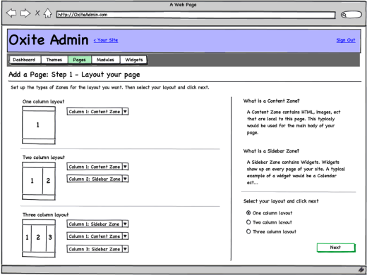
I can choose a theme to override the default rendering
我可以选择一个主题来覆盖默认渲染
This is our existing theme feature. Themes can enrich the list of templates shown above. See Themes.
这是我们现有的主题功能。主题可以丰富上面显示的模板列表。见[主题]（主题）。
I can create new content types that can be configured and displayed in any CMS page
我可以创建可以在任何CMS页面中配置和显示的新内容类型
Design TBD when we have a second content type to add to the application (likely blog or media).
当我们有第二种内容类型添加到应用程序（可能是博客或媒体）时设计TBD。
I can package my custom content type so other users can install it on their copy of the application
我可以打包自定义内容类型，以便其他用户可以将其安装在应用程序的副本上
Design TBD.
设计TBD。
I can install a new content type and start building pages using it
我可以安装新的内容类型并使用它开始构建页面
Design TBD.
设计TBD。
Permissions
权限
In this context, owner means the page owner when acting on a specific page, or the site owner otherwise.
在此上下文中，所有者是指在特定页面上操作时的页面所有者，或者是网站所有者。
Permission | Anon. | Authentic. | Owner | Admin. | Author | Editor
许可|匿名。 |真实。 |所有者|管理员。 |作者|编辑
------------------------------------------ | ----- | ---------- | ----- | ------ | ------ | ------
- | ----- | ---------- | ----- | ------ | ------ | ------
View pages | Yes | Yes | Yes | Yes | Yes | Yes
查看页面|是的|是的|是的|是的|是的|是
Create & manage pages (implies all others) | No | No | Yes | Yes | Yes | No
创建和管理页面（暗示所有其他页面）|没有|没有|是的|是的|是的|没有
Create draft pages | No | No | Yes | Yes | Yes | No
创建草稿页面|没有|没有|是的|是的|是的|没有
Modify/delete pages | No | No | Yes | Yes | Yes | No
修改/删除页面|没有|没有|是的|是的|是的|没有
Publish/unpublish/schedule pages | No | No | Yes | Yes | Yes | No
发布/取消发布/安排页面|没有|没有|是的|是的|是的|没有
Flows
流动
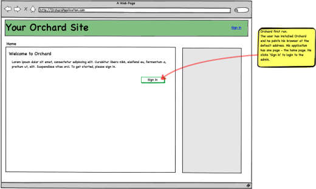
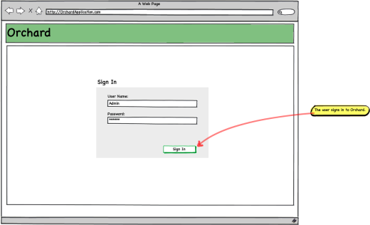
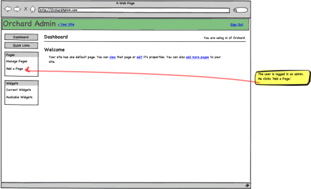
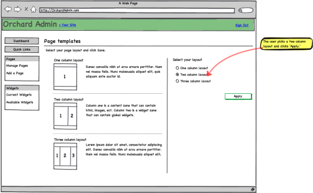
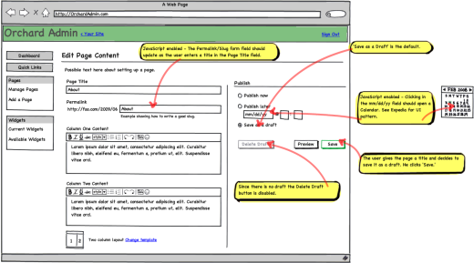
Workflow:
工作流程：
Published | Draft | Timer | Save button defaults to...
发布|草稿|定时器|保存按钮默认为...
--------- | ----- | ----- | --------------------------
- | ----- | ----- | --------------------------
Yes | No | No | Publish Now
是的|没有|没有|立即发布
No | Yes | Yes | Publish Later
没有|是的|是的|稍后发布
No | Yes | No | Save Draft
没有|是的|没有|保存草稿
Yes | Yes | Yes | Publish Later
是的|是的|是的|稍后发布
Yes | Yes | No | Save Draft
是的|是的|没有|保存草稿
No | No | No | Save Draft
没有|没有|没有|保存草稿
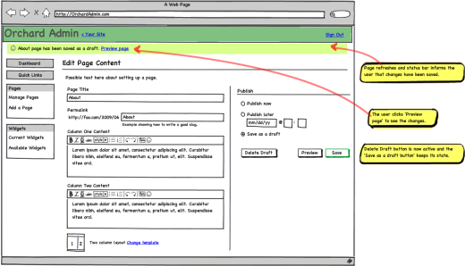
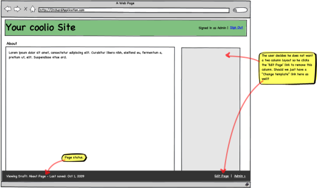
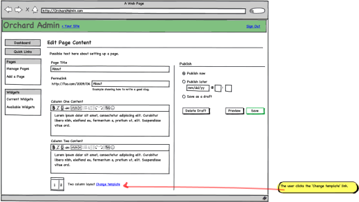
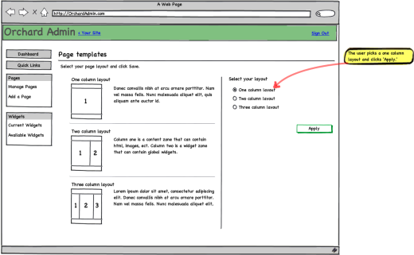
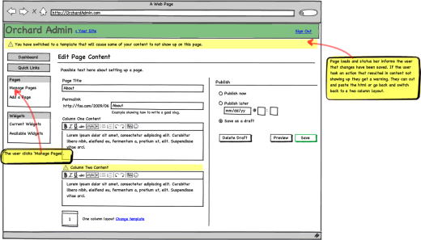
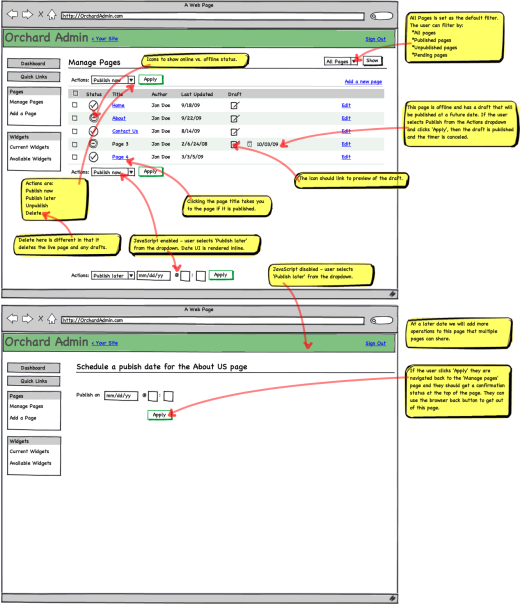